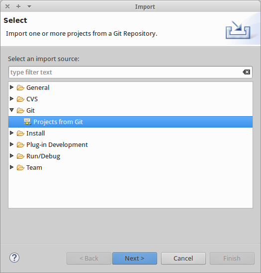
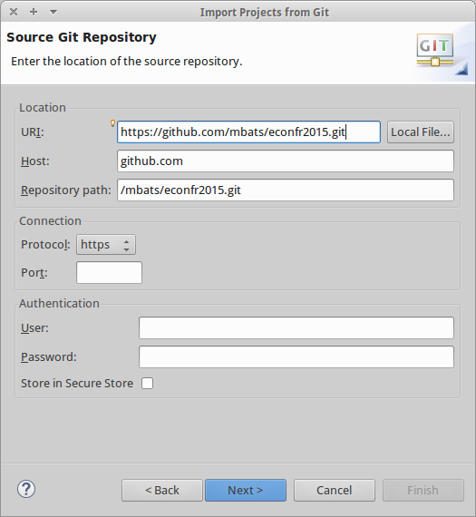
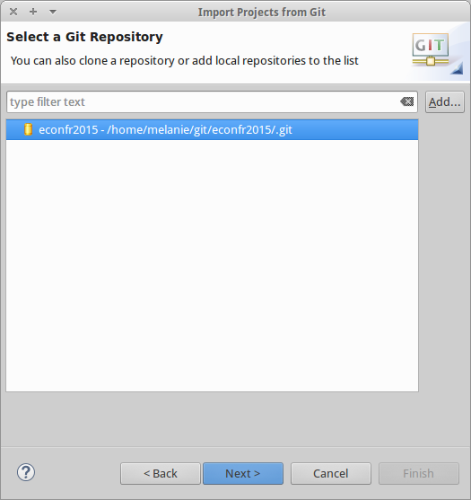
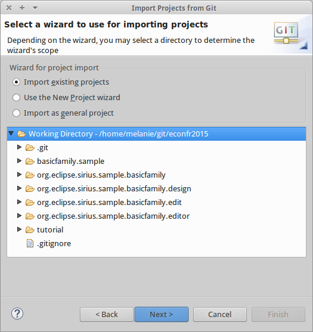
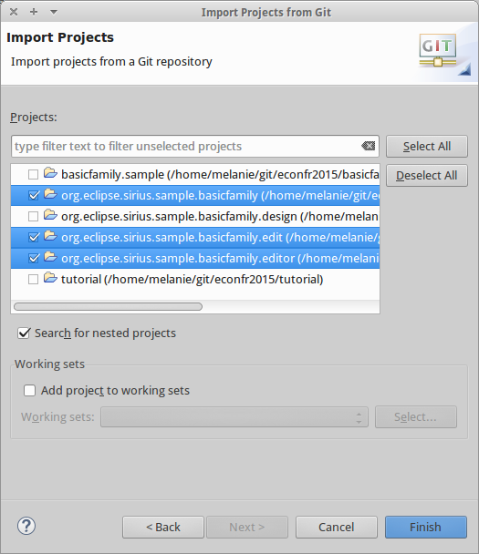
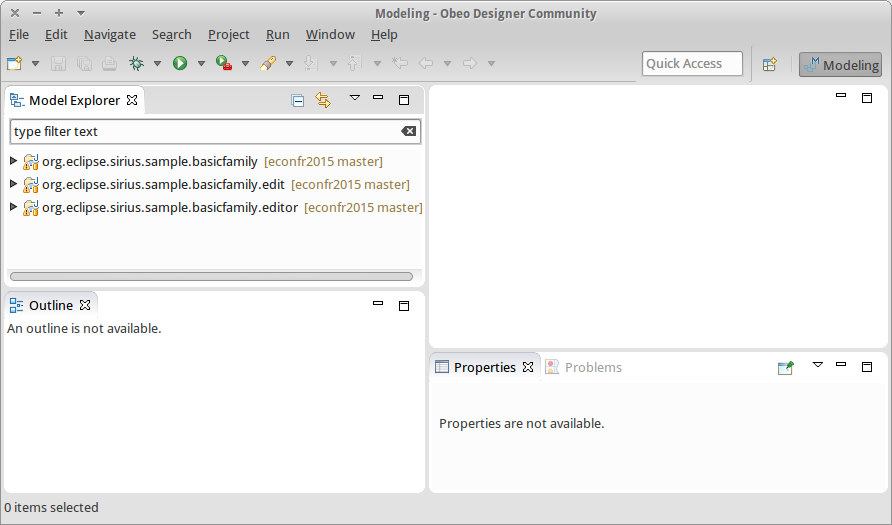
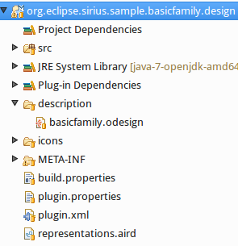
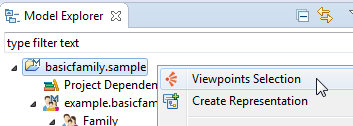
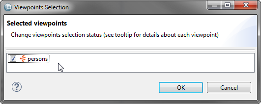
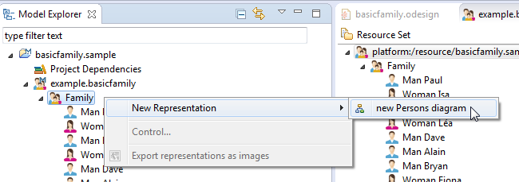

To participate to this tutorial, you need to :
To download Obeo Designer 7 Community Edition
Then unzip ObeoDesigner-Community-7.0-xxx.xxx.xxx.zip
To clone the tutorial git repository:
git clone @https://github.com/mbats/econfr2015.gitFile > Import...:
Git > Projects from Git:

Clone URI:
Set https://github.com/mbats/econfr2015.git in the field URI:

Then press Next and select only the metamodel’s related projects (see the next Import the sample Domain Model projects section).
A modeling workbench allows users to create or visualize models of a given Domain Model defined with EMF (Ecore model).
This tutorial relies on a Domain Model (DSL) defining the basic concepts of families:

The domain model is implemented with several EMF projects that you need to import into your workspace.
Import these projects from the Git repository : File > Import...
Select Git > Projects from Git
Select Existing local repository
Select econfr2015

Select Import existing Eclipse projects

And select only the following projects:

At the end your current environment should look like this:

To launch a new eclipse application click on Run / Run Configurations and double click on Eclipse Application to get a New_configuration. In order to comfortably run Sirius in your new runtime, you should add this option in your VM arguments :
-XX:MaxPermSize=256m

In the new Eclipse runtime, select the Sirius perspective.

This perspective provides specific Sirius menus and a new kind of project (Modeling Project). A Modeling Project contains models and the corresponding graphical representations created with Sirius.
A sample model is available from the git repository File > Import... > Git > Projects from Git > Existing local repository > Add...> econfr2015 > Import existing Eclipse projects. And select only the following projects:

Finally, your development environment should look like :
The wizard then installs a Modeling Project containing a file named example.basicfamily.

Double-clicking on this sample model opens a tree editor generated by EMF.
This editor allows you to see the properties and relationships of the model elements.

A basic designer exists which already displays Men, Women and child relationship. It also provides a tool to create Men.
This designer is available in the project :

Before starting to extend this tool, first use it to create a diagram on the sample model: you will see this diagram evolve progressively with new features during this tutorial.
To activate this tool, open the Viewpoints Selection wizard on the modeling project containing the sample model.

Then select the persons viewpoint.

Now you can create a diagram on the Family object: menu New Representation.
